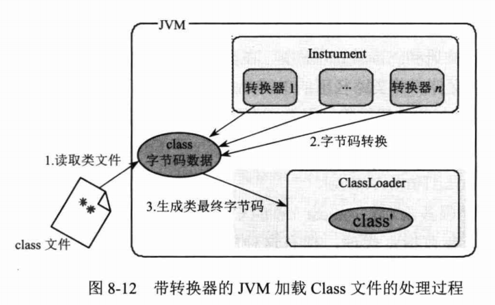

Java AOP
运行期代理
(1) JDK 动态代理
Proxy 利用 InvocationHandler 动态创建一个符合某一接口的实例，生成目标类的代理对象:
|
|
调用:
|
|
(2) CGLib 动态代理
CGLib 采用底层的字节码技术，可以为一个类创建子类，在子类中采用方法拦截的技术拦截所有父类方法的调用并顺势织入横切逻辑。
An enhancer allows the creation of Java proxies for non-interface types. The Enhancer can be compared with the Java standard library’s Proxy class which was introduced in Java 1.3. The Enhancer dynamically creates a subclass of a given type but intercepts all method calls. Other than with the Proxy class, this works for both class and interface types.
Even though constructors are only methods on the Java byte code level, the Enhancer class cannot instrument constructors. Neither can it instrument static or final classes.
|
|
A Final Word of Warning:
All cglib classes generate byte code which results in additional classes being stored in a special section of the JVM’s memory: The so called perm space. This permanent space is, as the name suggests, used for permanent objects that do not usually get garbage collected. This is however not completely true: Once a Class is loaded, it cannot be unloaded until the loading ClassLoader becomes available for garbage collection. This is only the case the Class was loaded with a custom ClassLoader which is not a native JVM system ClassLoader. This ClassLoader can be garbage collected if itself, all Classes it ever loaded and all instances of all Classes it ever loaded become available for garbage collection. This means: If you create more and more classes throughout the life of a Java application and if you do not take care of the removal of these classes, you will sooner or later run of of perm space what will result in your application’s death by the hands of an OutOfMemoryError. Therefore, use cglib sparingly (节俭地). However, if you use cglib wisely and carefully, you can really do amazing things with it that go beyond what you can do with non-instrumented Java applications.
类加载期代理
在类加载期通过字节码编辑技术将切面织入目标类中，这种织入方式称之为 LTW (Load Time Weaving)。AspectJ LTW 使用 Java 5.0 所提供的代理功能 (agent) 完成加载期切面织入工作。JDK 的代理功能能够让代理器访问到 JVM 的底层部件，借此向 JVM 注册类文件转换器，在类加载时对类文件的字节码进行转换。AspectJ LTW 由于基于 JDK 动态代理技术工作，而 JDK 动态代理的作用范围是整个 JVM，所以这种工作方式比较粗放，对于单一 JVM 多个应用的情况尤其不适合。Spring 为 LTW 的过程提供了细粒度的控制，它支持在单个 ClassLoader 范围内实施类文件转换，且配置更为简单。
Java 5.0 新增了一个 java.lang.instrument 包，该包中有两个能对 JVM 底层组件进行访问的类。具体地说，就是通过 JVM 的 -javaagent 代理参数在启动时获取 JVM 内部组件的引用，以便在后续流程中使用。借助 JDK 动态代理，可以在 JVM 启动时装配并应用 ClassTransformer，对类字节码进行转换，实现 AOP 的功能。
java.lang.instrument 包中定义了两个重要的接口。
ClassFileTransformer:Class文件转换器接口，该接口有一个唯一的方法，如下:
|
|
该接口对 Class 文件的字节码进行转换，classfileBuffer 是类文件对应的字节码数组，返回的 byte[] 是转换后的字节码。如果返回 null，则表示不进行字节码处理。
Instrumentation: 代表 JVM 内部的一个构件，可以通过该接口的方法向 JVM 的内部 “组件” 注册一些ClassFileTransformer:
|
|
当 ClassFileTransformer 实例注册到 JVM 后，JVM 在加载 Class 文件时，会 先调用这个 ClassFileTransformer 的 transform() 方法对 Class 文件的字节码进行转换。如果向 JVM 中注册多个 ClassFileTransformer，它们将按照注册的顺序组成链式的调用。这样 ClassFileTransformer 的实现者就可以从 JVM 层面截获所有类的字节码，并引入希望添加的逻辑，如让每个类拥有性能监视的能力、织入特殊用途的增强代码等。
